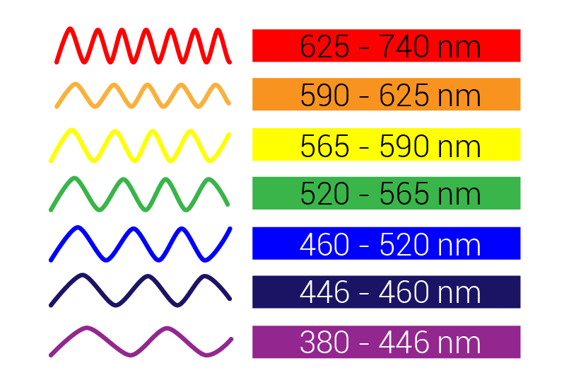
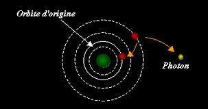
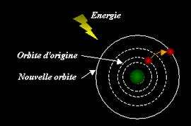

Light is a form of energy like electricity. It is composed of tiny particles of light called "photons" moving in the form of an electromagnetic wave.
White light is composed of colored lights: the primary colors such as blue, green and red as the secondary colors such as yellow, cyan and magenta. The colors spread along different waves (one per color).

A wave is the propagation of a disturbance occurring on it's passing a reversible change in physical properties of the local environment. It moves with a given speed which depends on the characteristics of environment. A wave carries energy without transporting matter.
The light, which is an electromagnetic wave, can be easily spread in the space (vacuum). In vacuum and in air, the light waves are propagated at a speed of 300 000km / s.
The electromagnetic spectrum includes the set of all the electromagnetic waves according to their wavelength and frequency.

Located between the infrared and ultraviolet, visible spectrum occupies only a small place in the full electromagnetic spectrum. Other animals or insects do not have the same vision as us: their visibility spectrum can be shifted into the IR (mosquitoes) or UV (bees).
Everything around us is made up of infinitely small particles: The atoms.
An atom consists of a nucleus around which electrons gravitate. Atom is often represented like our solar system, the sun (nucleus) is surrounded by planets (electrons).

Inside an atom, the electrons gravitate around the nucleus in circular orbits. The electrons that revolve on a close orbit near the nucleus have lower energy than those who gravitate to a more distant orbit.
Inside an atom, an electron orbit may change under certain conditions. For example, an electron can move from a high orbit to a low orbit. It moves from a state where it has a lot of energy towards a state where it has fewer (the electron releases the energy). This amount of energy released, which must be somewhere (in physics, nothing "disappears"), takes the form of an "energy package", called "photon".

A light source generaties this large-scale phenomenon of photon generation.
